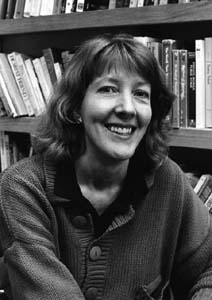

Jane Hunter
Professor of History, Associate Dean of the College
department: History
office: 346 Howard Hall
phone: 503-768-7446
e-mail: hunter@lclark.edu

Education:
Ph.D., American Studies, Yale University, 1981
M.A., American Studies, Yale University, 1975
B.A., American Studies, Yale University, 1971
2006-2008: I am currently serving as Associate Dean of the College.
Teaching:
I teach courses in American cultural and social history which offer reinterpretations of the American past in light of current understandings about race, class, and gender. As befits my training in American Studies, I'm especially interested in culture: how people structure and make sense of their lives under diverse historical circumstances. My classes frequently ask students to consider how individuals' own stories intersect with broader social and economic developments and how ideas of the self have differed. Students learn relevant law and explore its impact, working the turf between texts and contexts. Course reading is usually diverse, and might include historical interpretations, autobiographies, oral histories, supreme court decisions, fiction and films. I usually mix some lecturing with much discussion, and run an informal classroom. I have been involved in the Gender Studies Program, as well as the History Department.
Research:
My teaching and research have been mutually reinforcing. My current work on gender and power in Victorian America consists of two major projects. My first book, Gospel of Gentility: American Women Missionaries in Turn-of-the-Century China (1984), concluded that American women generally enjoyed their lives in China where they were able to feel their privileged status without needing to challenge American gender norms. My recent book, How Young Ladies Became Girls: The Victorian Origins of Girlhood in the United States, (Yale University Press, 2002) is also based on personal paper collections, in this case the journals, diaries, and letters of dozens of girls between the ages of ten and twenty. It argues that going to school--especially new coeducated high schools-- pulled teenaged girls out of the family, and into a peer culture which set new expectations for female adulthood, helping to form the so-called New Women of the turn of the century. I'm currently off in a new direction--considering the impact of gender in the largest Peace Corps field of all in the 1960s--the Philippine Islands.
Life Experiences:
I grew up in a large combined family in New Hampshire, and attended college and graduate school in the Northeast. After graduating from college, I spent two years teaching English composition in Hong Kong, an especially rich and influential period in my life. After returning to graduate school and marrying a fellow historian, I taught for ten years at Colby College in Maine, moving to Oregon with husband and daughters in 1990. We're currently loyal residents of Northeast Portland, where we like to bike and dine. During 2003-2004 I taught American History in Shanghai on a Fulbright Fellowship.
|